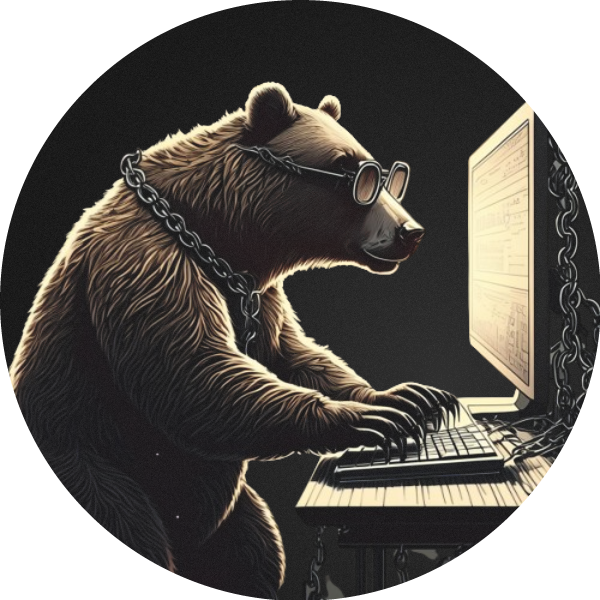

WARKS.DEV #10 – The Big Party!
6:30–11:00 pm GMT
The Micro Pug, Leamington Spa
Celebrate our 10th meetup with free entry, pizza and drinks. Adam Farrell will share what’s next for WARKS.DEV.
- Days
- --
- Hours
- --
- Minutes
- --
- Seconds
- --